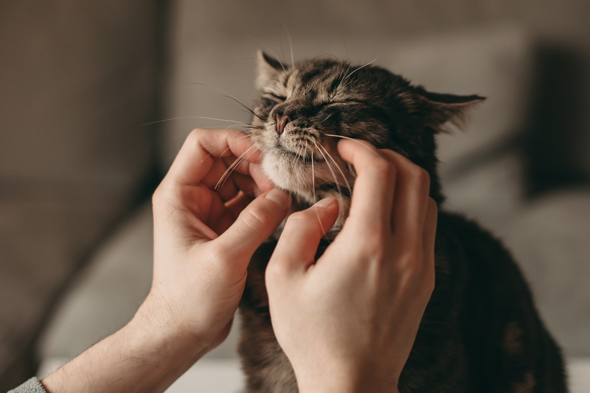

Caso curioso #1: ¿Por qué los gatos ronronean?
Descubre las razones detrás de este curioso comportamiento felino y qué significa para su bienestar.
Ver caso
Descubre las razones detrás de este curioso comportamiento felino y qué significa para su bienestar.
Ver casoTe contamos cuánto ejercicio necesita tu perro según su raza y edad.
Ver caso